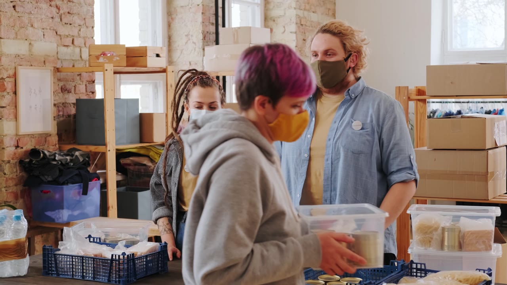

A delivery centre.
Execute defined activities. Follow established processes. Resolve the task handed to the team. Build trust through consistency and service discipline.
From delivery centre
to strategic value creator.
A story of people, intelligent operations and enterprise transformation — and how a Global Capability Centre creates value beyond scale.
FROM DELIVERY
TO INTELLIGENCE
01 / THE OPENING FILM
The people behind the progress.
The capability behind the connection.
Original BT footage + free licensed stock · Full HD edit · Music · Illustrative logistics story.
02 / HOW OUR CAPABILITY EVOLVED
Our journey is a change in responsibility: from dependable service delivery to deeper expertise, connected decisions and ownership of customer value.
Execute defined activities. Follow established processes. Resolve the task handed to the team. Build trust through consistency and service discipline.
Bring customer, network, digital and transformation expertise together. Improve the process, guide decisions and own the journey from operational signal to customer assurance.
Capability depth enables faster restoration, operational resilience and more informed customer communication. The measure is the outcome we enable, alongside the work we deliver.
Customer and service management, AI and digital operations, network, cloud and security expertise, and transformation capability now connect around the same business need.
04 / HOW OUR TECHNOLOGY EVOLVED
A complex legacy estate is giving way to strategic platforms that connect data, workflows and decisions across the service journey.
Teams switched between systems, reconciled information and repeated handovers. Complexity increased support effort and made change harder.
Platform consolidation simplifies the estate and supports lower total cost of ownership. Connected service information gives AI and people the context to improve decisions and customer experience.
Infrastructure enables AI. Transformation happens when AI changes how work gets done: detecting an emerging fault, helping an engineer decide what to do, and keeping the customer informed. Adoption, skills and change management turn that capability into sustained business value.
05 / CONNECTING ORGANISATIONS. SUPPORTING EVERYDAY LIFE.
A connection carries more than data. It carries a business commitment, a service people rely on and the confidence to keep going.
The same operational discipline supports care, commerce, supply chains and global teams.
People, data and digital services
Connection interrupted
Care · trade · learning · work · travel
Fragmented alarms and manual investigation can delay diagnosis. Organisations wait for clarity while employees, customers and the services they rely on feel the disruption.
Illustrative examples show why reliable connectivity matters across society. They do not describe specific customer incidents or claim measured outcomes for individual services.
For a global logistics organisation, a network issue can delay scans, dispatch and shipment visibility. AI changes both the response and the customer’s experience.
Uncertainty travels from the network to the warehouse.
Shared evidence connects engineers, operations and customers.
Fewer operational interruptions help protect delivery commitments, reduce avoidable effort and keep goods moving across the global supply chain.

Illustrative customer journey, informed by operational capabilities. Benefits vary by service and adoption; no customer-specific metrics are presented. Engineers retain oversight of actions and learning.
Reliable connectivity and AI-assisted operations help organisations detect disruption, coordinate response and keep people informed.
Support access to digital services and coordination between care locations.
Support the availability of payments, branches and customer-facing services.
Connect plants, suppliers and planning teams across the supply chain.
Support learning, information and services communities rely on.
Connect operational teams and timely information for people and goods.
Support collaboration and customer service across locations and time zones.
From a better service experience to stronger organisations.
From stronger organisations to greater value for society.
07 / FROM AI LAUNCH TO BUSINESS VALUE
A capability creates value when it changes a real decision, action or experience in daily work.
Where does a customer wait? Where does an engineer repeat work? Embed AI into those moments, with clear ownership and human judgement.
Train colleagues, involve operations in design, build trust in recommendations and act on feedback. Change habits as well as technology.
Track real use, guidance quality, restoration time, customer effort and operational acceptance. Learn from the evidence before scaling.
Curiosity. Creativity. Care. Togetherness.
The city’s spirit travels into the workplace through its people: the curiosity to question, the creativity to solve, the empathy to serve and the instinct to stand together.
That culture shapes how colleagues learn from one another, welcome different perspectives and take responsibility for customers far beyond Kolkata.
Mentoring, learning and career development help colleagues combine domain expertise with AI. The goal is confidence to improve the process and judgement to know when a person must lead.
No organisation can build this future alone. BT brings real operational challenges and domain expertise; NASSCOM can connect the industry, academia, innovators and skills ecosystem around them.
Real ecosystem examples. Practical opportunities for BT to collaborate.
NASSCOM AI Adoption Index and AI Gamechangers.
BT opportunity: adoption clinics on investigation, customer updates and evidence of value.
Explore NASSCOM’s adoption initiativesFutureSkills Prime: industry-linked digital learning.
BT opportunity: mentored student and employee projects on service intelligence and AI evaluation.
FutureSkills PrimeIndustry and academia learning modelUDYAM 4.0: Oriental Engineering Works and Factri.AI’s paperless operations example.
BT opportunity: focused SME pilots on multilingual support and early detection, with a route into adoption.
Read the UDYAM 4.0 case studyNASSCOM’s Responsible AI Playbook.
BT opportunity: joint evaluation of privacy, reliability, accessibility and human oversight.
Read the Responsible AI PlaybookThese are proposed collaboration pathways inspired by published programmes and examples; they do not assert existing BT partnerships or commitments with the named organisations.
“Where the world has not been broken up into fragments by narrow domestic walls;”Rabindranath Tagore · Gitanjali 35
Talent + Technology + Partnerships
= Intelligent Value Creation
BT Kolkata’s next chapter is about creating greater business, customer and societal value through innovation, capability and collaboration.
Kahani Kolkata Ki.
A stronger future, created together.